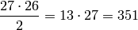

In this session I am going to create boxplots and scatterplots of some of the relevant features.
First boxplots. I have to make a couple of decisions.
- How many trials in each boxplot?
- How many features to create boxplots of?
- Should it be the same trials in the different boxplots?
- And which trials should i use?
And I think I have the answers
- I think 50 trials strikes the right balance between having enough trials to make the plots interesting, and at the same time, being interpretable
- I think I am going to create boxplots of all the features, except the ones I have found is zero throughout the whole dataset.
- I am going to just use the first 50 trials. Maybe this is stupid but I am not sure I earn anything by selecting a random set of trials. Actually it might be more interesting to see the trend in the quartiles of a feature for 50 sequential trials.
The boxplots have been created. Had some troubles getting the xaxis look good. Ended up only labeling every 10’th trial. The code for plotting the boxplots is shown here. I have made it easy to plot a random trial interval, and have plotted the trials 1-50, 51-100, 100-150
import matplotlib.pyplot as plt
import numpy as np
from src.data_interface import d, L_clean
from src.utils import get_path
path = get_path(__file__) + '/..'
trials = range(101, 151)
ticklabels = []
for i in trials:
if i==trials[0] or i%10 == 0:
ticklabels.append(i)
else:
ticklabels.append('')
for label in L_clean:
data = [d.get_trial(i).get_feature(label).view() for i in trials]
plt.title('Boxplot of feature {0} in the trials {1}-{2}'.format(
label, trials[0], trials[-1]))
plt.boxplot(data)
plt.gca().set_xticklabels(ticklabels)
for tick in plt.gca().xaxis.get_major_ticks():
tick.label1.set_fontsize(10)
for tick in plt.gca().yaxis.get_major_ticks():
tick.label1.set_fontsize(10)
plt.savefig(
'{0}/plots/boxplots/{1}-t{2}-t{3}.pdf'.format(
path, label, trials[0], trials[-1]),
format='pdf', papertype='a4')
plt.cla()
And now for the scatterplots. First I need to select a subset of features of interest. Obviously the features that are zero throughout the dataset can be excluded. This means that P8, V7 and V9 are not needed. Also ObsNum and TrialID are not of interest. This leaves 27 features. But that is still

unique scatter plots to create. Hmm. Maybe I just start with E9 and V11 that was used by Inference. And also P3/P4 and P6/P7 that are inverse proportionally related.
I ended up creating scatterplots of some 40 combinations of features and found a single interesting detail. The features V1 and V6 seems to be linearly related when V1 is larger than 80.
Note
I first made the scatter plot of V1 vs. V6 when I had made the PCA and found that V6 had a large coefficient i the second principal component.
Not much else to discuss. Haven’t that many interesting details from the scatter plots.